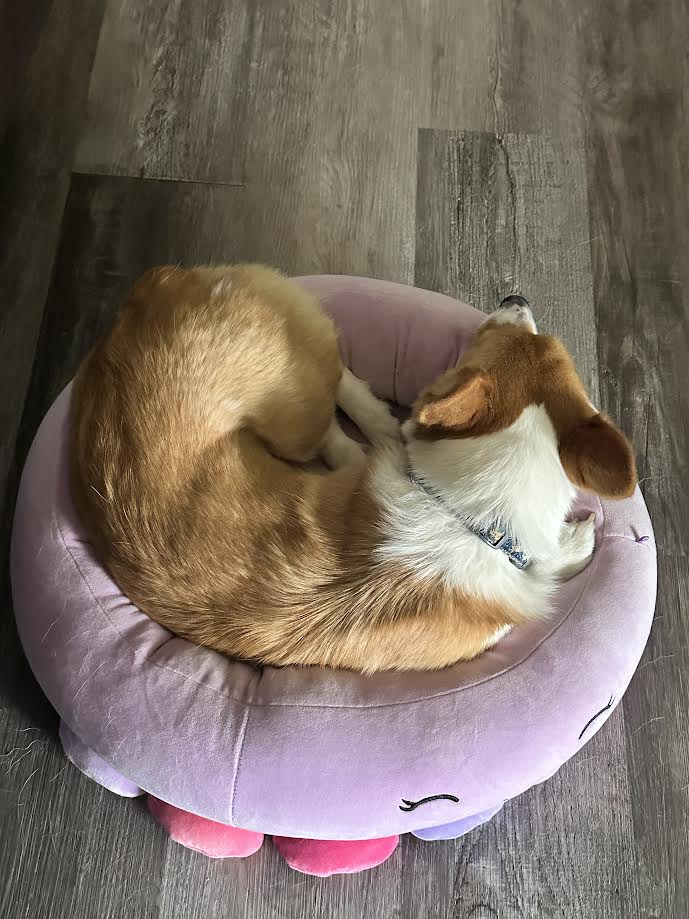

Home | How to Wash a Pembroke Welsh Corgi | Flea Treatment
Routine Flea and Tick Prevention
Flea and tick prevention is a non-negotiable part of dog ownership, primarily because these tiny hitchhikers are far more than just a nuisance. Fleas can quickly turn a quiet home into an itchy nightmare, causing painful dermatitis and even tapeworms, while ticks are notorious for transmitting serious illnesses like Lyme disease and Rocky Mountain spotted fever. Because many of these pests have become remarkably resilient to over-the-counter shampoos, most veterinarians recommend a monthly preventative—either a chewable tablet or a topical "spot-on" treatment—to break the life cycle before an infestation starts. Keeping your dog protected doesn't just save them from the "scratch-and-roll" routine; it keeps your living room from becoming a breeding ground for unwanted guests.

How many types of flea and tick treatments are there?
Oral (e.g., NexGard, Simparica Trio)
These are the current "gold standard" for convenience and thoroughness, but they come with a specific safety caveat.
- The "Kill" Factor: They work systemically. This means a flea or tick must bite your dog to die. While they kill very fast (often within 4–8 hours), they do not stop a tick from hitching a ride into your house first.
- The Safety Note: Most oral chews belong to a class of drugs called isoxazolines. The FDA has issued alerts noting that these can cause neurological issues (tremors, stumbling, or seizures) in rare cases. If your dog has a history of seizures, vets almost always recommend avoiding this category.
- Best For: Dogs with thick double coats (like Corgis) where topical oils can't reach the skin, and dogs that swim or get bathed frequently.
Topical Spot-Ons
(e.g., Frontline, K9 Advantix II)
These are traditional liquids applied to the skin between the shoulder blades.
- The "Repel" Factor: Unlike most orals, some topicals (like K9 Advantix) actually repel pests. This means a tick might never even bite your dog. This is a huge plus for dogs with Flea Allergy Dermatitis (FAD), where even one bite causes a massive reaction.
- The Mess Factor: They leave a greasy spot for about 24 hours. You have to keep children and other pets away from the dog until it's dry.
- Best For: Picky eaters who refuse pills, dogs with sensitive stomachs, and owners who want a "contact kill" that doesn't require the pest to bite the dog.
Collars (e.g., Seresto)
- The Long Game: They offer the best value, lasting up to 8 months. They work by slowly releasing low concentrations of active ingredients into the fatty layer of the dog's skin.
- The Skin Factor: Because the medication sits on the surface, some dogs develop "contact dermatitis" (red, itchy skin) around the neck.
- Best For: Budget-conscious owners, "outdoor" dogs in high-tick areas, and owners who struggle to remember a monthly dosing schedule.